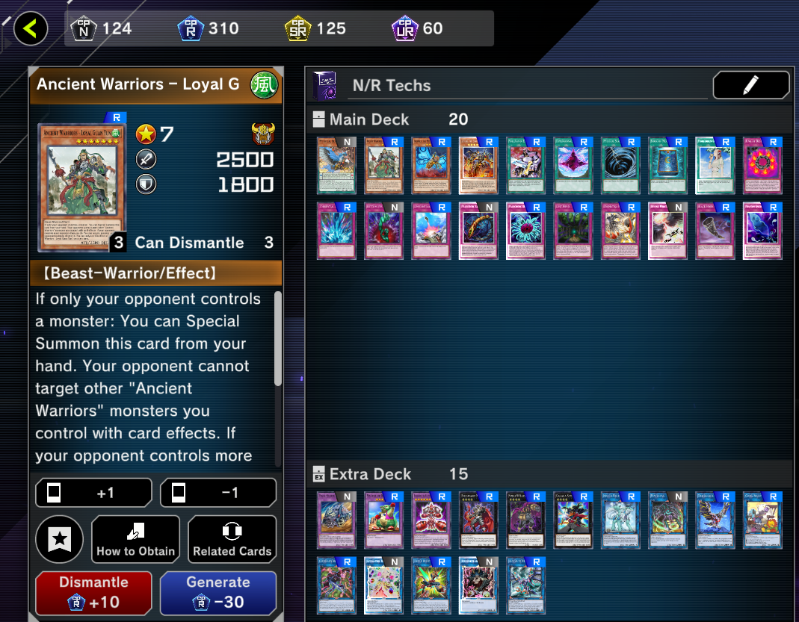

Hello, welcome to my page where I will be guiding you in how to get into the hobby of Yu-Gi-Oh where on this page specifically I will go into where you may of hear of Yu-Gi-Oh.
Where you may of heard Yu-Gi-Oh from
The Anime

Source of image: Here
One place you may of heard Yu-Gi-Oh from is from the anime where you may of seen it on tv much like I did where it would be on saturday morning and I would spend my saturday morning watching the show along with other shows and me watching it like that made it really important in my life. Additionally I believe many people would be familiar with the original but there were many sequels to it which usually coincided with new mechanics for the card game where recently there hasn't been one with the last one being about a new way to play it with it not being show anywhere but Japan.
Video Games

Source of image: Here
Another place you may of heard of Yu-Gi-Oh is the video game as it is one of the most accessible way for one to play the game as there is 0 cost to it. Additionally, for the early game there it is very beginner friendly in terms of how much in game currency it has as it gives you usally enough to fully build a deck. I would recommend this as a start to many as it is available to most devices with a performance that varies depending on the choice of device where it is a good way to dip your toes into the hobby with it being mainly free. Additionally, to this game there have been many other video games throughout the years where some that would follow the anime as talked about before and then others that are spinoffs of the main card game and play differntly. As stated before I would say the best option would be master duel in terms of official games.
Real-Life events
Source of image: https://ygoprodeck.com/article/master-duel-joins-world-championship-series-302194/
Lastly another place I believe that is possible for you to of heard of Yu-Gi-Oh is actual card game events as it is one of the main competative card games where it stands next to Pokemon and Magic the Gathering in that. With it being one of the more known card games I believe there is a chance you may of heard of it through that fact as there multiple events for it both at a local and higher level where a local card shop may host tournaments for it. If you are already famliar with other card games than you most likely have seen it although knowing how to play those card games will not help in learning this game. The reason for it not being much help is that Yu-Gi-Oh play much more different as there are no restrictions when playing where other games usually have an energy system whereas Yu-Gi-Oh is pretty much play till you can't with whatever cards you have. I don't want to get to into how to properly play it here as it will be covered in this page
Where to go from here
Here will be a small description of the other parts of this website where you can navigate to each part by scrolling back up or clicking the links here:
- Introduction to Yu-Gi-Oh: This part of the site will go through the most basic rules of the game and will give examples with directiosn, if you have not touched the game at all or are unsure about the game I'd recommend going here
- Deck Recommendation: This part of the site with a few deck recommendations where it will go through different play styles and different difficulties and based on those factors the user may choose one to use
- Alternate Formats: On this part of the website it will go through other formats that are either officially made or community made where it will go through a basic summary of them with some possibly peaking the interest of a user